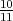

Solution: We use Theorem 6.2 on page 327 for the problem:
Here is an ampl model file and run file for this problem.
- Dualize first constraint:
so

- Dualize second constraint:
so
so
- Dual easily solved if, for example, in part (a):
With λ = 1, the solution to LR(λ) is x = (0, 0, 2), so this solves the Lagrangian dual if we choose b1 = 2.
Solution: Here is an ampl model file and run file for this problem.
- If we dualize the first and second constraints or the second and third constraints
then it is immediate that the extreme points of the remaining constraint with
nonnegativity are integer, so the Lagrangian relaxation is equivalent to the LP
relaxation.
If we dualize the first and third constraints, we have
and

achieved by x = (5, 5), and this is also the value of the LP relaxation.
- Need to pick the objective so that the constraint x1 ≤ 6 is active at optimality. So, eg, max x2. Then zLD = 6 < 6.75 = zLP .
- The point x = (5, 5) is not in the convex hull of the set of integer points satisfying
any pair of the constraints, so we get an improved upper bound.
Dualize first constraint: optimal x = (5, 5) with value 36.
Dualize second constraint: optimal x = (5, 5) with value 37.
Dualize third constraint: optimal x = (3, 6) with value 36.
-
- Dualize first and third constraints:

The convex hull of Q is shaded. The dualized constraints are in magenta, and the optimal point is in green. If instead we maximize x2, the optimal value is zero.
- Dualize first constraint:

The convex hull of Q is shaded. The dualized constraint is in magenta, and the optimal point is in green.
- Dualize second constraint:

The convex hull of Q is shaded. The dualized constraint is in magenta, and the optimal point is in green.
- Dualize third constraint:

The convex hull of Q is shaded. The dualized constraint is in magenta, and the optimal point is in green.
- Dualize first and third constraints:
Solution:
See the separate AMPL model file, data file, run file, and output file. The optimal solution is to open facilities 5 and 6, with facility 5 serving customers 1 and 2 and facility 6 serving customers 3 and 4, achieving an optimal value of 22.
Solution: Note first that xip = x i for any positive integer power p for any binary variable xi. Let xijk denote a variable that is supposed to equal the product xixjxk, etc. The original problem is equivalent to:
![max 6x1 + 5x2 + 5x3 + 4x4 + 2x12 + 3x14 + 4x23 + 4x24
subject to x13 + x24 + x124 ≤ 1
3x234 + 2x13 + 5x134 + 4x2 ≤ 6
5x1 + 4x2 + 6x3 + 4x4 ≤ 14
x12 - x1 ≤ 0
x12 - x2 ≤ 0
x1 + x2 - x12 ≤ 1
x - x ≤ 0
13 1
x13 - x3 ≤ 0
x1 + x3 - x13 ≤ 1
x14 - x1 ≤ 0
x14 - x4 ≤ 0
x + x - x ≤ 1
1 4 14
x23 - x2 ≤ 0
x23 - x3 ≤ 0
x2 + x3 - x23 ≤ 1
x24 - x2 ≤ 0
x - x ≤ 0
24 4
x2 + x4 - x24 ≤ 1
x124 - x1 ≤ 0
x124 - x2 ≤ 0
x124 - x4 ≤ 0
x1 + x2 + x4 - x124 ≤ 2
x134 - x1 ≤ 0
x134 - x3 ≤ 0
x134 - x4 ≤ 0
x1 + x3 + x4 - x134 ≤ 2
x234 - x2 ≤ 0
x234 - x3 ≤ 0
x234 - x4 ≤ 0
x2 + x3 + x4 - x234 ≤ 2
x ,x ,x ,x ,x ,x ,x ,x ∈ B
12 13 14 23 24 124 134 234 4
x ∈ B .](hw6sol18x.png)
All the additional constraints are the McCormick inequalities that force the additional binary variables to take the correct value. The optimal solution is x = (0, 1, 1, 0) with value 14, found using this AMPL model file and data file.

can be written as an equivalent mixed integer linear program, where u is a finite positive vector in n, A m×n, H m×k, b m, and Q n×k. Note that Q may contain both positive and negative entries.
Solution: Introduce new variables wij to capture the product xizj. The problem is equivalent to
The linear constraints force wij = xizj provided zj is binary and 0 ≤ xi ≤ ui. In particular, if zj = 0 then we must have wij ≤ uizj = 0 together with wij ≥ 0, and if zj = 1 then we must have wij ≥ xi together with wij ≤ xi. If zj = 1 then the constraint wij ≤ uizj is redundant, and if zj = 0 then the constraint wij ≥ xi - ui(1 - zj) is redundant.